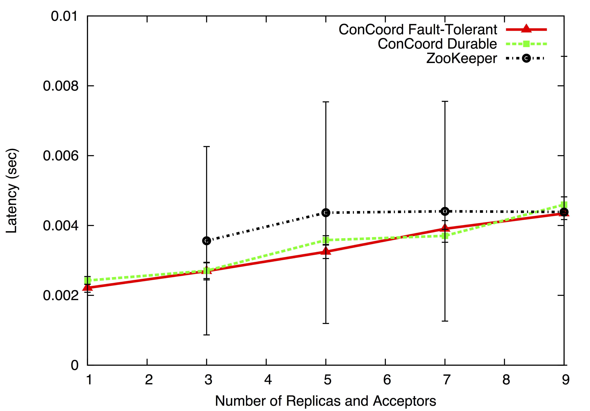
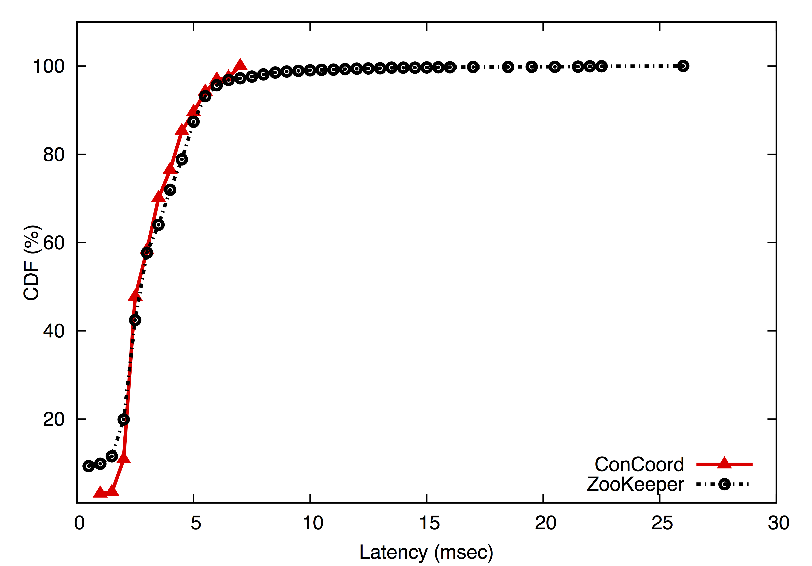
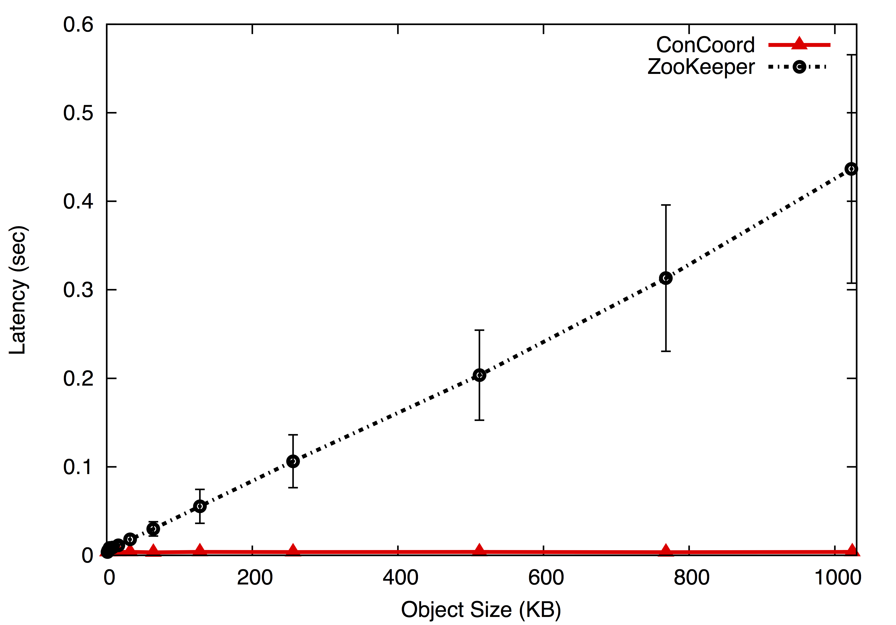
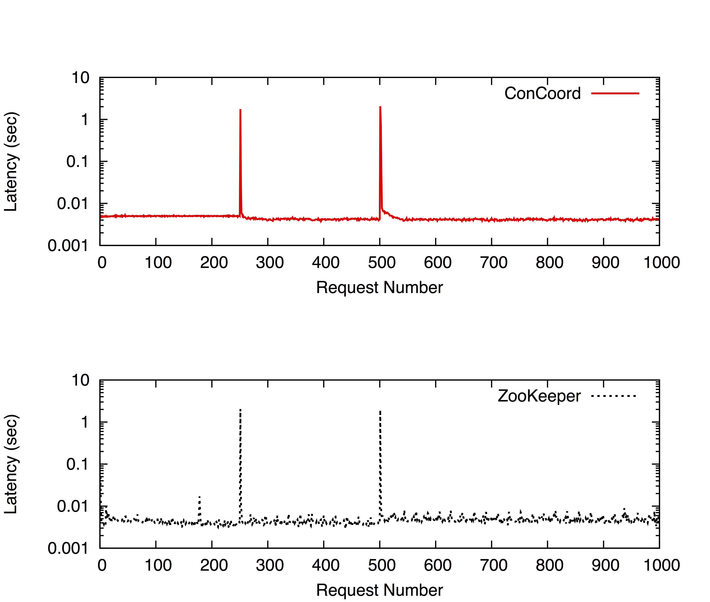

We have performed a detailed evaluation of ConCoord's performance and compared it to widely used and state-of-the-art coordination service ZooKeeper. During our experiments we used end-to-end measurements from clients. The inputs to clients are generated beforehand and same inputs are used for ConCoord and ZooKeeper tests. The following graph plots the latency of requests against the number of replicas and acceptors in ConCoord and number of replicas in ZooKeeper. ConCoord and ZooKeeper present comparable latency results. ConCoord shows lower latency for lower number of replicas and differs from ZooKeeper performance by 1 ms on average for larger number of replicas.

One important behavior we observe in the previous graph is the high standard deviation present in ZooKeeper measurements. While ConCoord requests are handled with fairly the same average latency, there is a big divergence in latency measurements for ZooKeeper. To examine this behavior in more detail, we plotted the CDF for both ConCoord and ZooKeeper. Following graph shows corresponding CDF measurements. The CDF of ConCoord shows that there is a considerably even distribution of latency values shown by ConCoord varying from values less than 1msec to 8 msec. ZooKeeper, on the other hand, shows high variance, which is not favorable in a coordination service.

We examine the scalability of ConCoord in relation to size of the replicated state and the number of replicas and acceptors. Following graph shows how ZooKeeper and ConCoord scale as the size of the replicated state grows. As ZooKeeper has to serialize and deserialize data and perform read and write operations with an update on the replicated size, the overhead these operations elicit increase as the replicated state becomes larger. ConCoord on the other hand, doesn't require serialization, deserialization and even reinstantiation of an object for every update as every object is kept as a live instance. Consequently, in ConCoord the size of the replicated state doesn't effect the latency experienced by the client, providing same performance for any replicated state size.

A critical parameter in any fault-tolerant system is the amount of fault-tolerance the system offers. In the following graph, we show how ConCoord scales as the number of replicas and acceptors increase, in effect when the fault-tolerance of the system is improved considerably. Note that these tests are run on our small cluster of 10 servers. As ConCoord runtime is highly CPU-bound, the scalability graph has the overhead of the servers running on the same CPU. The graph shows that with extensive numbers of replicas and acceptors created, ConCoord performs well.

In the following graph we show how ConCoord and ZooKeeper handle failures of leaders. For this benchmark, the first leader is failed after the 250th request and the second leader is failed after 500th request. ConCoord takes on average 3 seconds to recover whereas ZooKeeper takes on average 2 seconds.
